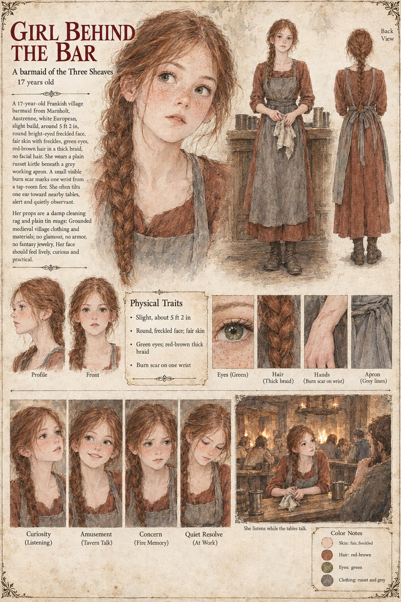

Girl Behind the Bar
Barmaid of the Three Sheaves · unnamed · 17 years old by her sheet
A barmaid of the Three Sheaves, where Waldrada is the keeper, and the one person in the room whose work is to be present while everyone else talks. The tavern is the one whose voices the other pages record, a carter's wife with her sacking and swords, a carter with his Widow's Ashes, an old sot by the fire with his tale of the Guild, a journeyman cooper with his splinter of Solan's fire. Her sheet draws her at the bar with a damp rag and plain tin mugs, an ear tilted toward the nearest tables, and its caption is She listens while the tables talk. What she reports, in Chapter 6, is that the Lady Adalgund was seen veiled at the Low Market buying a plain iron ladle from the smith's wife, presumably Hiltrude of the Low Forge.
Her small scar is the sheet's detail: a burn on one wrist from a tap-room fire, drawn in close-up and echoed in the expression panel Concern (Fire Memory). The other panels run Curiosity (Listening), Amusement (Tavern Talk) and Quiet Resolve (At Work). Written from the sheet and the character notes in the case's publication-prep file; the manuscript itself was not to hand. Her age of 17, Frankish origin in Marnholt, slight build of about 5 ft 2 in, round freckled face, fair skin, green eyes, thick red-brown braid, plain russet kirtle and grey linen working apron are the sheet's own.